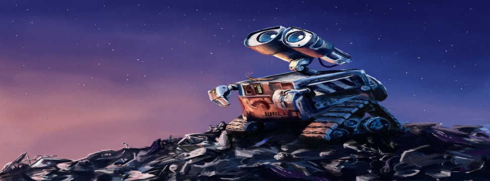

瓦力(Wall-E)
2008年6月27日

【片長時間】 約９８分鐘
【作品類別】 迪士尼/皮克斯動畫，長篇劇情動畫片
【原著取材】 原創故事
【內容介紹】本片的故事發生在未來的地球，當時人類被迫要離開髒亂的地球，但最後要離開的人卻忘記把一個機器人給關閉，這機器人就是故事的主角 Wall-E（是「Waste Allocation Load Lifter Earth-Class」的縮寫），他是個被設計來處理地球廢棄物的機器人，這位被遺忘的機器人沒有被關閉，所以就一直在地球上重複做著同樣的廢棄物處理工作，日復一日，年復一年 ，整個星球就只有蟑螂小強是他的同伴。
一直到了數百年之後，另一個由人類設計的機器人 EVE 被派來地球探勘生命跡象，Wall-E 終於遇到了新訪客，他的「生命」從此也有極大的轉變…為了追尋所愛，Wall-E 即將展開一段刺激又浪漫的星河冒險。